Chrome extension for Salesforce
The Salesforce toolkit built for your browser.
SOQL console, inline API names, a profile & permission set comparator, dark mode, cache refresh, and session switching — all running locally, with no server of ForceKIT's own in between.
Free, no account required. No ads, no tracking.
Everything you reach for in Setup, one panel away.
ForceKIT lives in Chrome's side panel and on the Salesforce pages you're already on — no separate app, no extra login.
SOQL & SOSL Console
Write, run, and save SOQL or SOSL queries against any connected org — Tooling-only objects switch API automatically, with history you can revisit later.
Inline API Names
See field and object API names directly on record and Setup pages — no more right-click-inspect detours.
Profile & Permission Set Comparator
Diff two profiles or permission sets side by side and spot access differences in seconds.
One-Click Cache Refresh
Clear stale Lightning and Setup cache without a full reload or a lost place in what you were doing.
Dark Mode for Salesforce
A dark stylesheet injected straight into Setup and Lightning pages, for the eyes that deserve it.
Lightning ⇄ Classic Switch
Jump between UIs instantly, without hunting for the toggle buried in your profile menu.
Saved Orgs & Sessions
Reopen a saved org session instantly, including orgs connected via OAuth — no repeated logins.
Optional Cloud Sync
Keep queries, saved orgs, and preferences in sync across your own devices via Chrome Sync or your own Google Drive — off by default.
Local Encryption
Set a master password or use a passkey to encrypt saved credentials and TOTP secrets on your device.
Drill Into Related Records
Click a lookup to open its record, jump back with breadcrumbs, or flip the card to see every related record grouped by object — all without leaving the page.
Debug Log Explorer
Search inside the raw log to jump straight to what matters, and expand or collapse the Apex execution tree to follow the call stack without getting lost.
Bulk Data Transfer
Paste a CSV and insert, update, upsert, delete, or undelete records against the REST, Tooling, or Metadata API — with configurable batch size and one-click retry for failed rows.
Built-in TOTP Authenticator
Generate 2FA codes without leaving the browser — add accounts manually, import a QR image, or capture one straight off your screen.
A real toolkit, not another tab to babysit.
A look at the side panel — from running queries to comparing permissions.
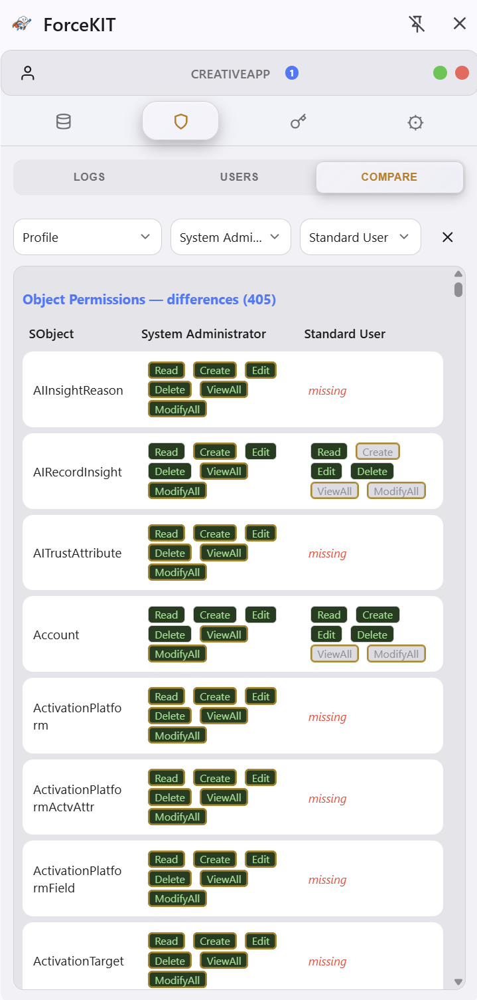
Compare Profiles & Permission Sets side by side
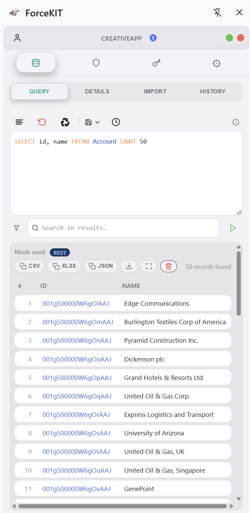
Run SOQL queries and browse results instantly
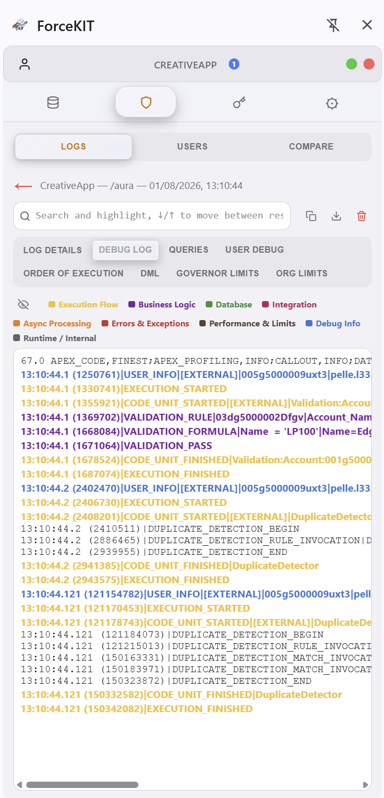
Read debug logs with color-coded categories
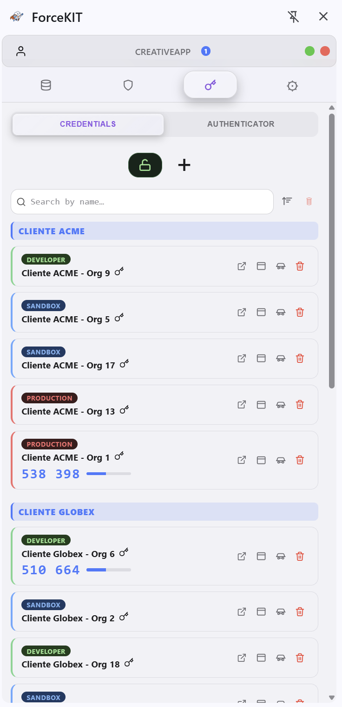
Save orgs and switch between sessions instantly
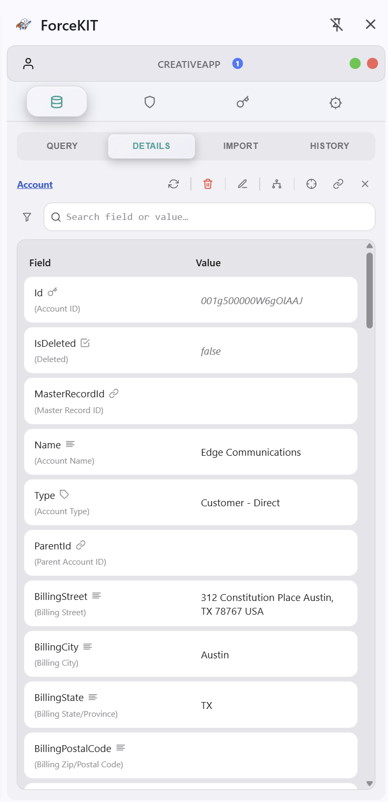
Inspect record fields and API names inline
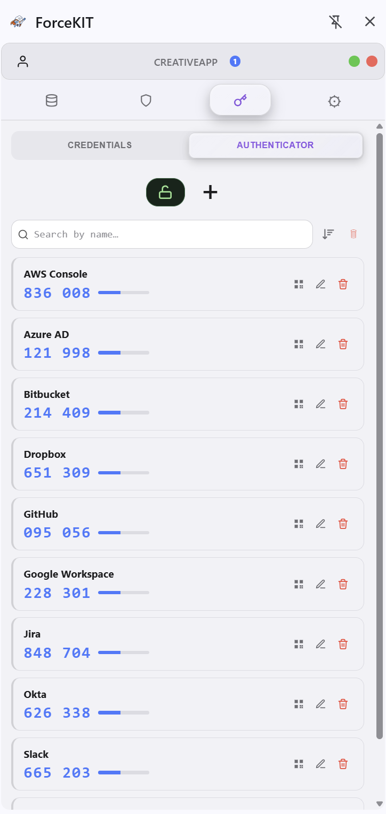
Generate 2FA codes with the built-in authenticator
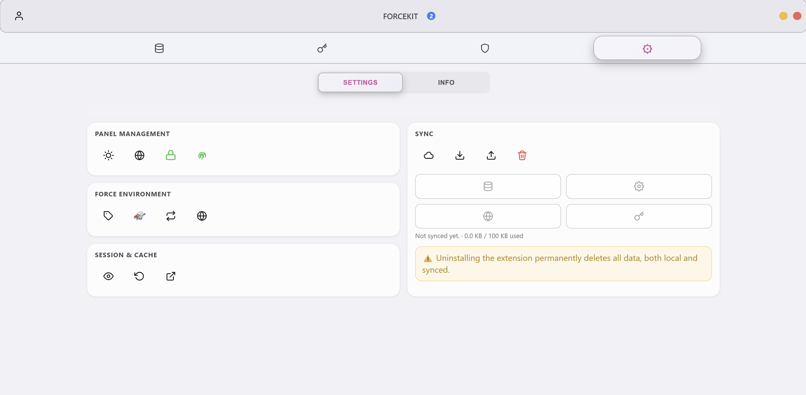
Fine-tune panel, sync, and session behavior
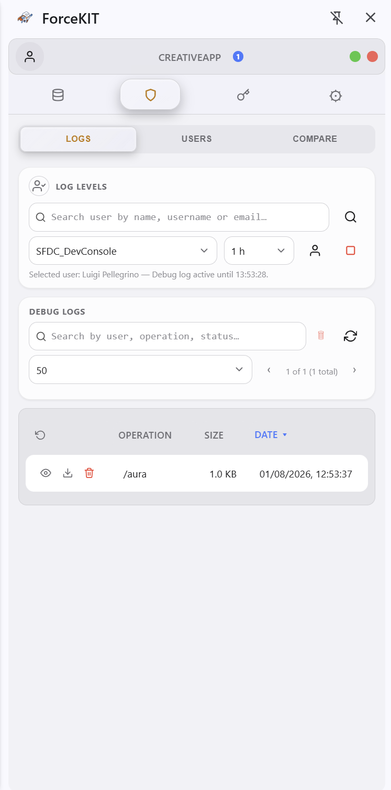
Manage debug log levels and browse the log list
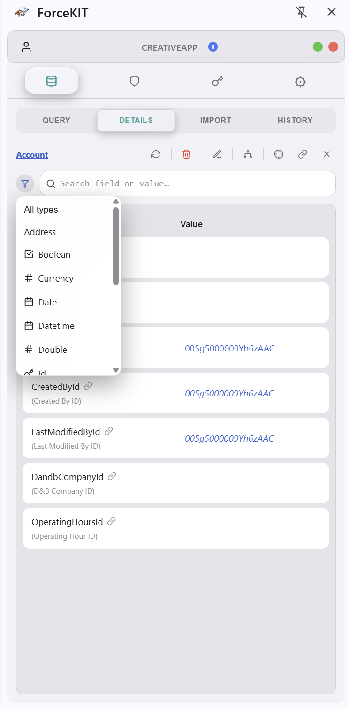
Filter record fields by type in Detail
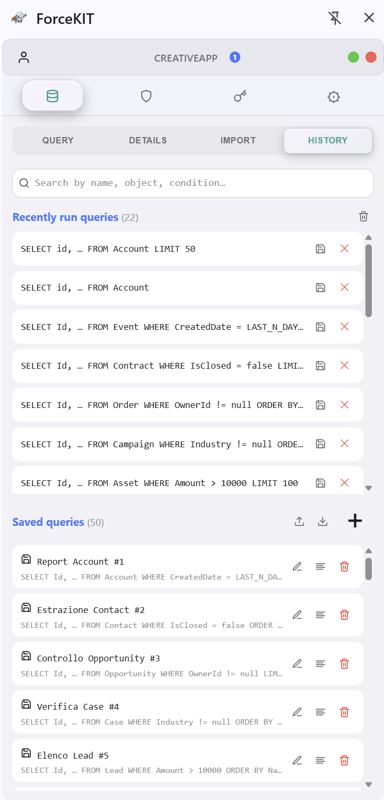
Revisit recent and saved queries anytime
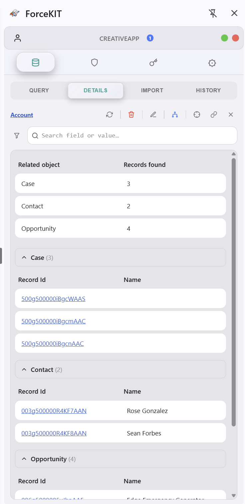
See every related record grouped by object
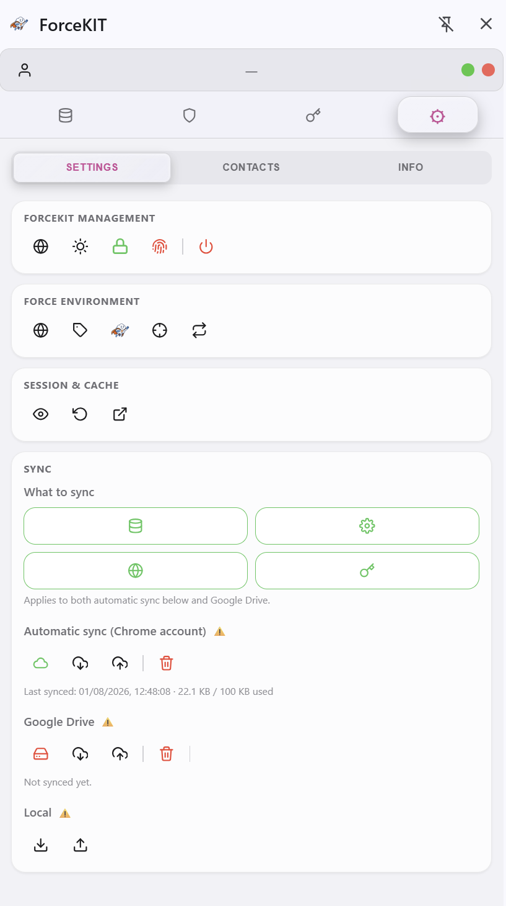
Configure sync and panel settings
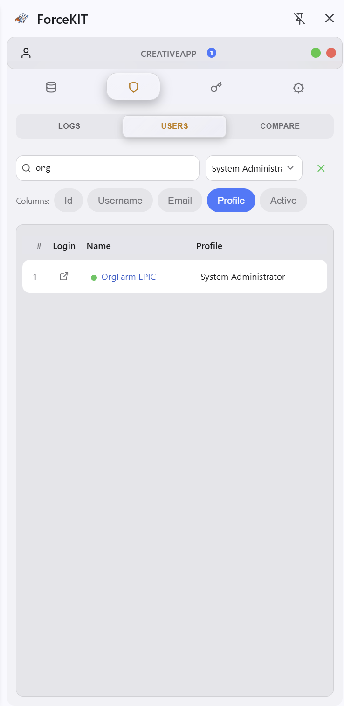
Search org users, pick which columns to show
Your org, your browser, your data.
ForceKIT has no server of its own. The only network traffic it makes goes directly from your browser to your own Salesforce org, or to Google's Chrome Sync or your own Google Drive if you turn one of those on yourself. Nothing is sent to us, because there is no "us" to send it to.